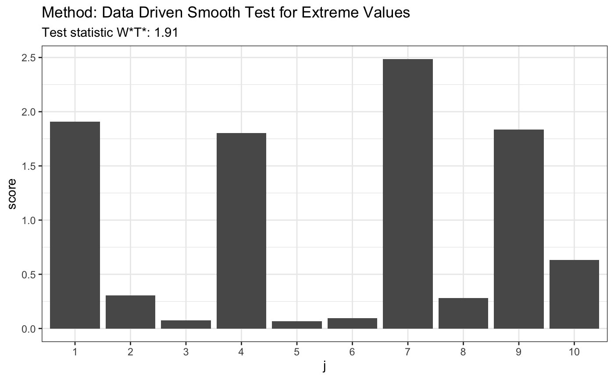
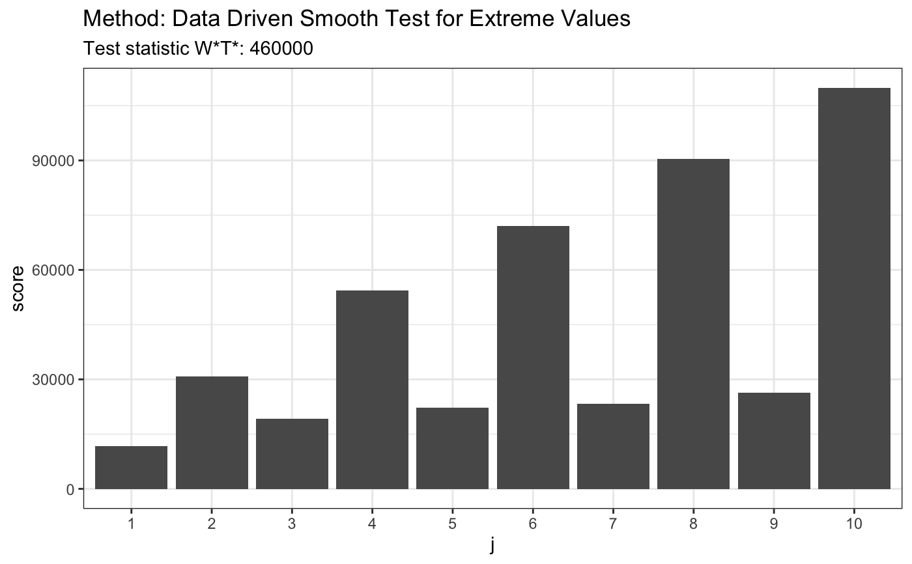

ddst.extr.test.RdPerforms data driven smooth test for composite hypothesis of extreme value distribution. Null density is given by \( f(z;\gamma)=1/\gamma_2 \exp((z-\gamma_1)/\gamma_2- \exp((z-\gamma_1)/\gamma_2))\), \(z \in R\).
ddst.extr.test(x, base = ddst.base.legendre, c = 100, B = 1000, compute.p = FALSE, Dmax = 5, ...)
| x | a (non-empty) numeric vector of data values |
|---|---|
| base | a function which returns orthogonal system, might be |
| c | a parameter for model selection rule, see package description |
| B | an integer specifying the number of replicates used in p-value computation |
| compute.p | a logical value indicating whether to compute a p-value |
| Dmax | an integer specifying the maximum number of coordinates, only for advanced users |
| ... | further arguments |
An object of class htest
the value of the test statistic.
the number of choosen coordinates (k).
a character string indicating the parameters of performed test.
a character string giving the name(s) of the data.
the p-value for the test, computed only if compute.p=TRUE.
We model alternatives similarly as in Kallenberg and Ledwina (1997) and Janic-Wroblewska (2004) using Legendre's polynomials or cosines. For more details see: http://www.biecek.pl/R/ddst/description.pdf.
Hosking, J.R.M., Wallis, J.R., Wood, E.F. (1985). Estimation of the generalized extreme-value distribution by the method of probability-weighted moments. \( Technometrics\) 27, 251--261.
Janic-Wroblewska, A. (2004). Data-driven smooth test for extreme value distribution. \( Statistics\) 38, 413--426.
Janic, A. and Ledwina, T. (2008). Data-driven tests for a location-scale family revisited. \( J. Statist. Theory. Pract. Special issue on Modern Goodness of Fit Methods. accepted.\).
Kallenberg, W.C.M., Ledwina, T. (1997). Data driven smooth tests for composite hypotheses: Comparison of powers. \( J. Statist. Comput. Simul.\) 59, 101--121.
library(evd) # for given vector of 19 numbers z <- c(13.41, 6.04, 1.26, 3.67, -4.54, 2.92, 0.44, 12.93, 6.77, 10.09, 4.10, 4.04, -1.97, 2.17, -5.38, -7.30, 4.75, 5.63, 8.84) t <- ddst.extr.test(z, compute.p=TRUE) t#> #> Data Driven Smooth Test for Extreme Values #> #> data: z, base: ddst.base.legendre, c: 100 #> WT* = 1.9073, n. coord = 1, p-value = 0.595 #>plot(t)#> #> Data Driven Smooth Test for Extreme Values #> #> data: x, base: ddst.base.legendre, c: 100 #> WT* = 0.35658, n. coord = 1, p-value = 0.998 #>plot(t)#> #> Data Driven Smooth Test for Extreme Values #> #> data: x, base: ddst.base.legendre, c: 100 #> WT* = 181830, n. coord = 5, p-value < 2.2e-16 #>plot(t)